07 — Creative Work
Art
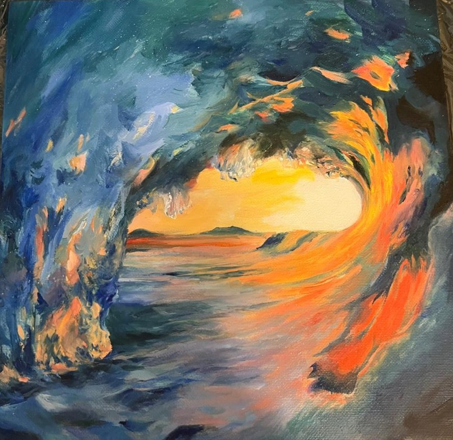
Wave

Innocence
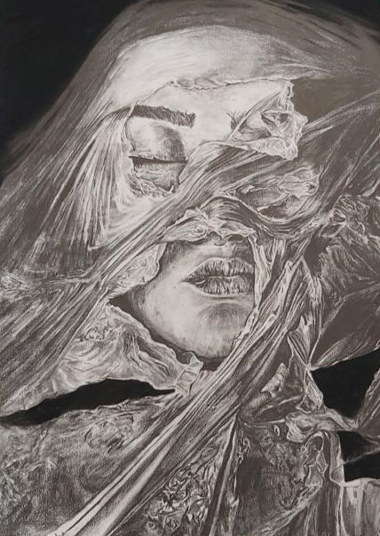
Black and White

Wisdom
For more, visit my art portfolio →
Ceramics
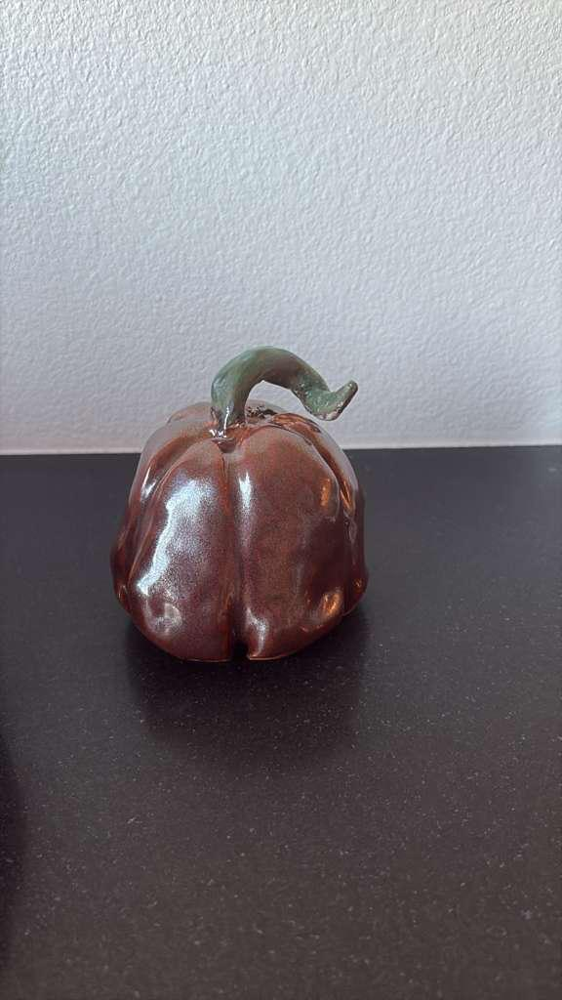
Pumpkin
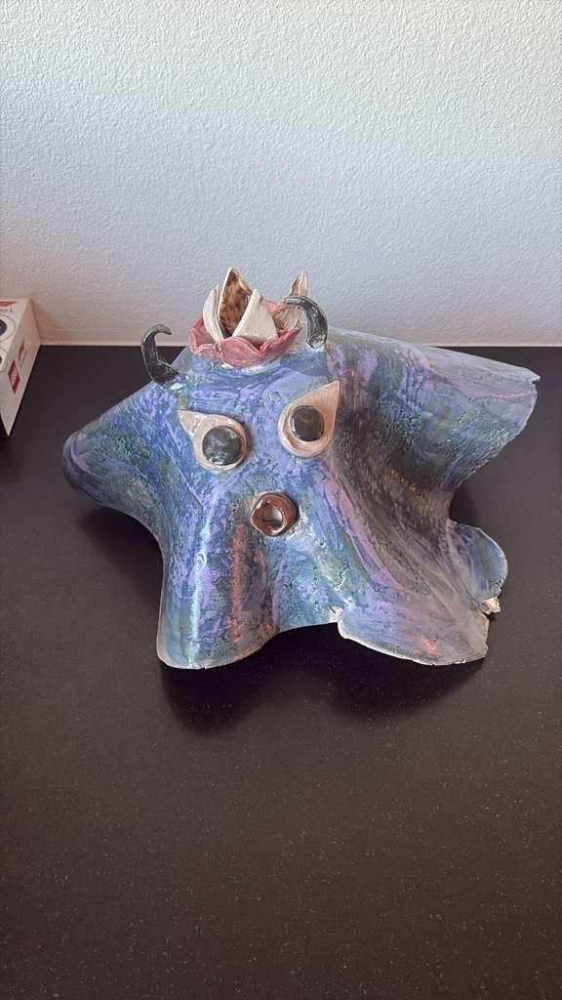
Ghost
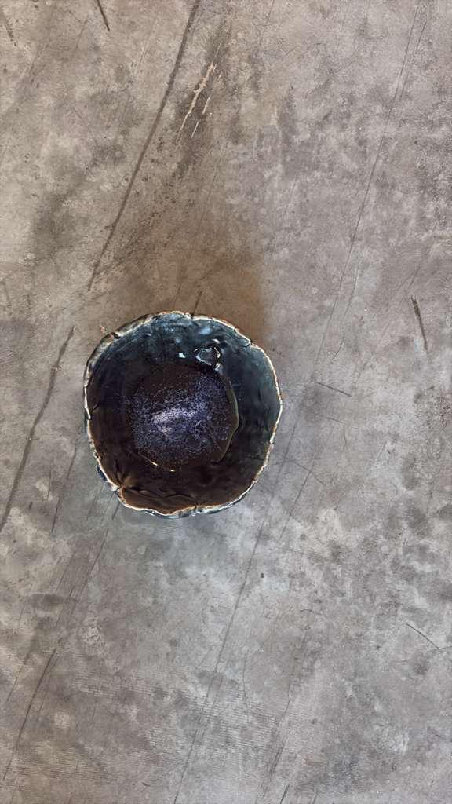
Bowl
Portfolio · Engineer & Creator
A mind in pursuit, drifting through the spaces where intuition, engineering, and imagination intertwine.
00 — Introduction
I am a software engineer working at Amazon. I graduated from Purdue University in May 2025 with a B.S in Computer Engineering and a minor in Mathematics. My interdisciplinary education spans AI, Computer Graphics, Embedded Systems, Chip Design, and Software Engineering, equipping me with skills to tackle multidisciplinary problems.
I welcome every opportunity to connect and network, so feel free to reach out!
01 — Résumé
02 — Work Experience
03 — Research
I developed SDSI, a variational inference framework that restricts posterior variances to a sparse, low-dimensional subspace, enabling scalable Bayesian neural networks with improved efficiency. The method introduces a subspace addition strategy that preserves high-gradient directions, resulting in enhanced predictive accuracy and calibration across both clean and corrupted datasets.
SDSI achieved 76.36% accuracy, 0.9655 AUROC, and 0.0014 ECE on CIFAR-100 (10% subnet), outperforming Sparse BNNs, VBLL approaches, and Laplace Subnetworks. The framework reaches full BNN-level predictive performance in only 40 training epochs.
"[Re] BiRT: Bio-Inspired Replay in Vision Transformers"
I conducted a reproducibility study on BiRT, a continual learning framework that leverages vision transformers with constructive noise and episodic memory replay to mitigate catastrophic forgetting. The project involved re-implementing the method, evaluating performance across multiple benchmarks, and analyzing the robustness and practical applicability of the approach. Published in ReScience C.
Special thanks to Jinen Setpal and ML@Purdue for their support and resources.
I worked inside the Birck Nano Center's ISO-class cleanroom to manufacture MOSCAPs with end-to-end semiconductor process integration. Performed thin-film deposition (ALD, PVD sputtering, e-beam evaporation), photolithography patterning, reactive-ion etching, wafer thinning, and electrical characterization. Analyzed dielectric properties of HfO₂ gate oxides through IV and CV measurements.
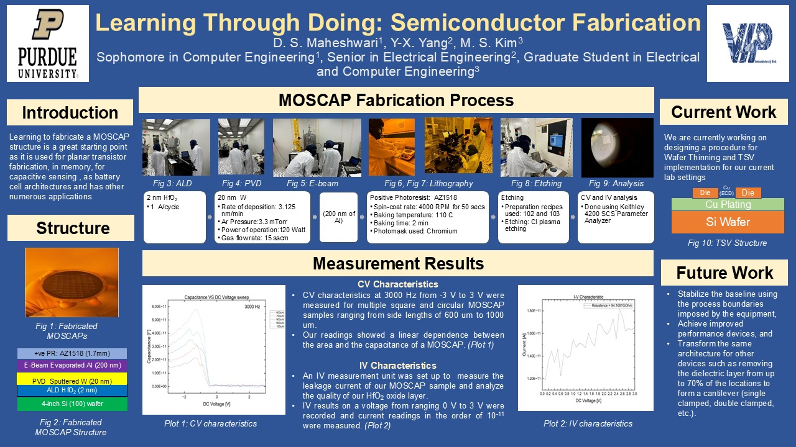
"An FPGA-Based Neuromorphic Processor with All-to-All Connectivity"
I developed a preliminary implementation of an FPGA-based neuromorphic processor featuring all-to-all connectivity on an Artix-7 FPGA. Implemented Spiking Neural Networks (SNNs) in Verilog on the Basys3 board using Xilinx Vivado, validated architecture on algorithmic test cases, and designed custom IP modules including UART transceivers, receivers, and FIFO buffers at 9600 bps.
04 — Projects
Developed a cross-platform app in Kivy (Python) for custom recognition of static hand gestures using lazy learning methods with OpenCV and MediaPipe. Lightweight, fast to train, and presented at CES 2024.
Won the startup incubator competition for developing an integrated financial platform offering personalized insights, portfolio suggestions, trading simulations, and chatbot support. Used open-source APIs, LLMs (OpenAI), and Financial BERT for real-time news sentiment analysis.
Developed a procedural terrain generation system using Perlin noise and fractal algorithms to create realistic landscapes with configurable roughness, elevation, and textures.
A hardware/software module implementing USB full-speed bulk transfer endpoint integrated with an AHB-Lite SoC bus.
Built a dual-core pipelined MSI-coherent processor with LR/SC snooping caches and a RISC-V-compliant memory controller. Designed a single-core, 5-stage RISC-V pipeline with split instruction and data caches, and implemented a branch predictor that improved execution speed by an average of 25% across varying memory latencies.
Built an automated, remotely controlled debris-collection vehicle using Micro:bits and Robo:bits with ultrasonic sensors for collision avoidance.
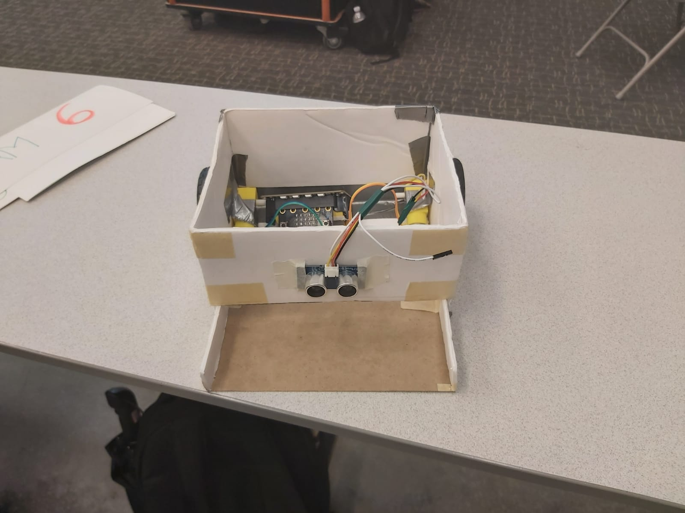
Garbage Collection Vehicle
Used TinkerCad to design operational amplifiers — band-pass filters, instrumentation and summing amplifiers — to build an ECG for measuring heart rate. Measured T and P waves on Arduino software using constructed ECG and electrodes.
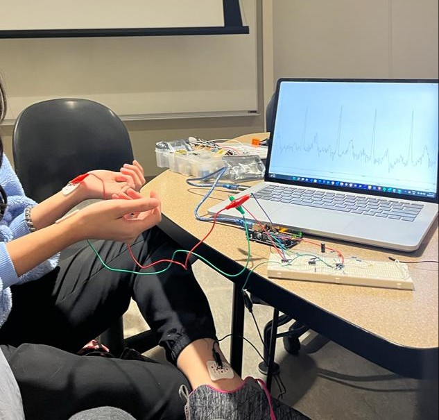
Electrocardiogram
05 — Metal Work
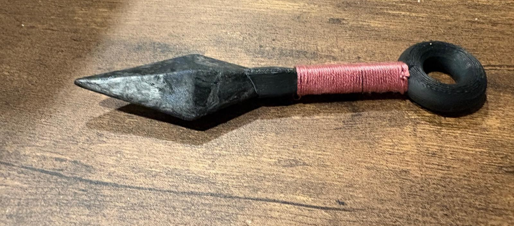
Hunai Knife
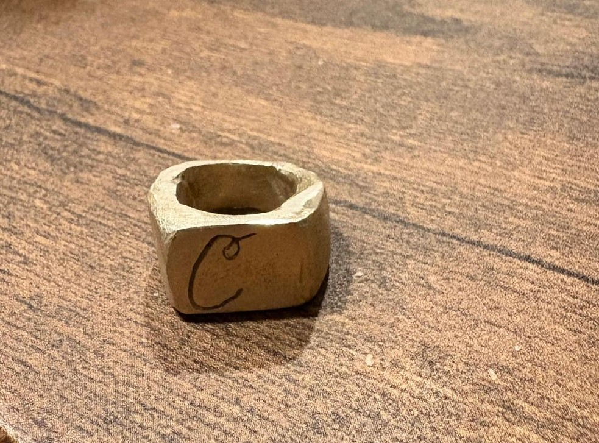
Metal Ring
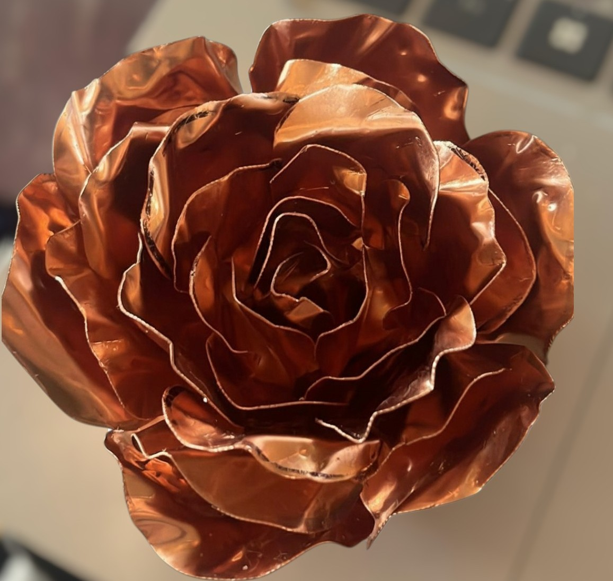
Metal Rose
06 — 3D Work
Solar System
Bedroom Scene
Telephone
An Alien Story
Character Modelling
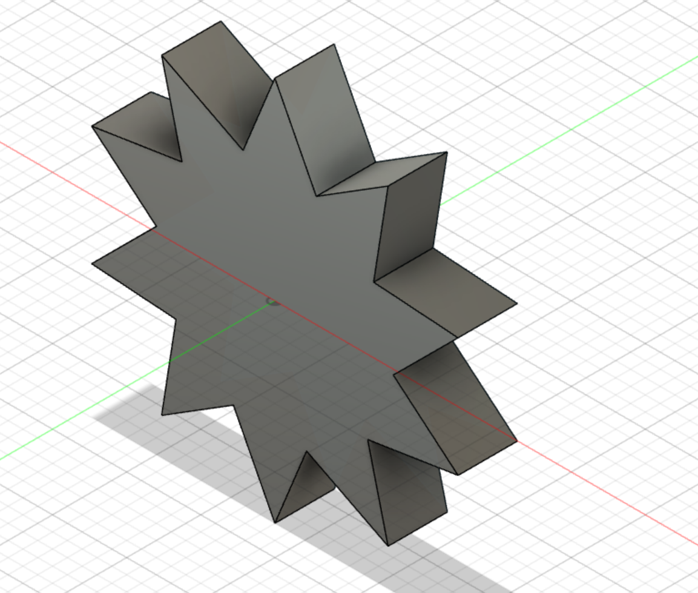
Wheel
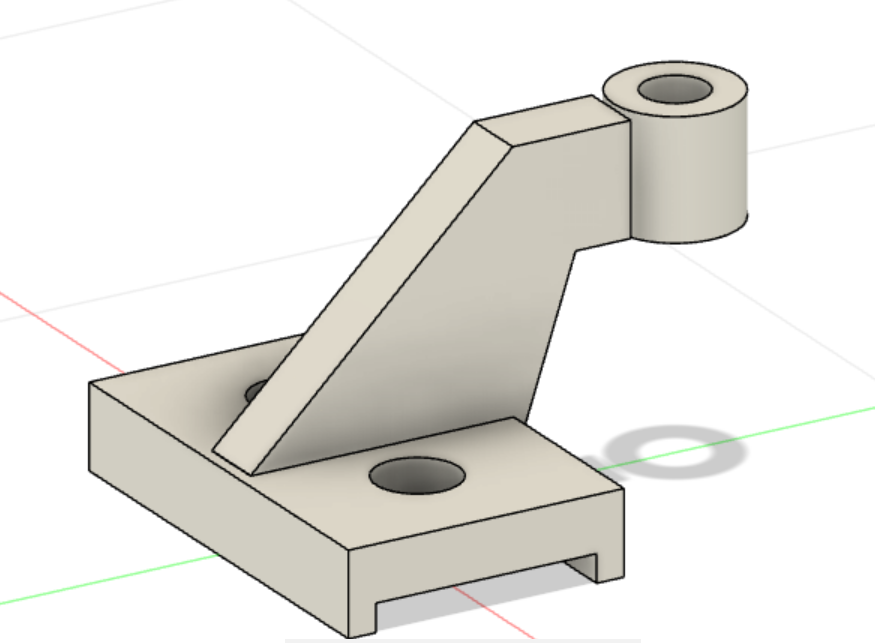
Microscope
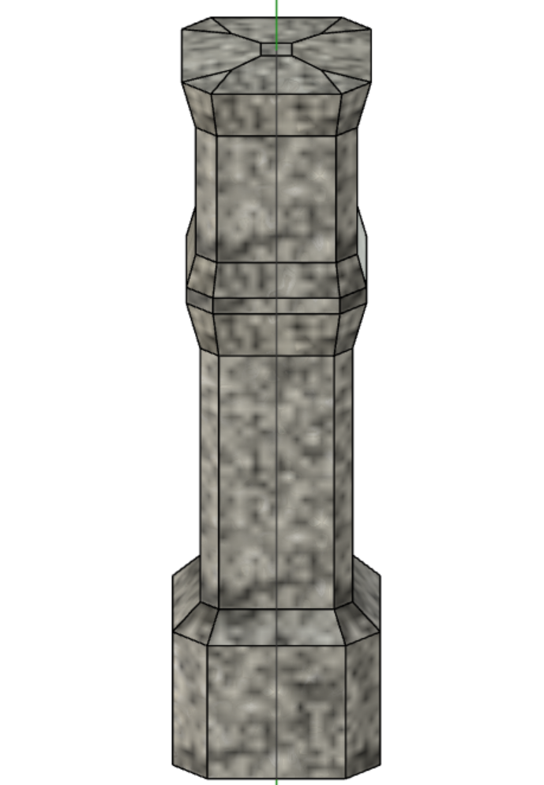
Pillar
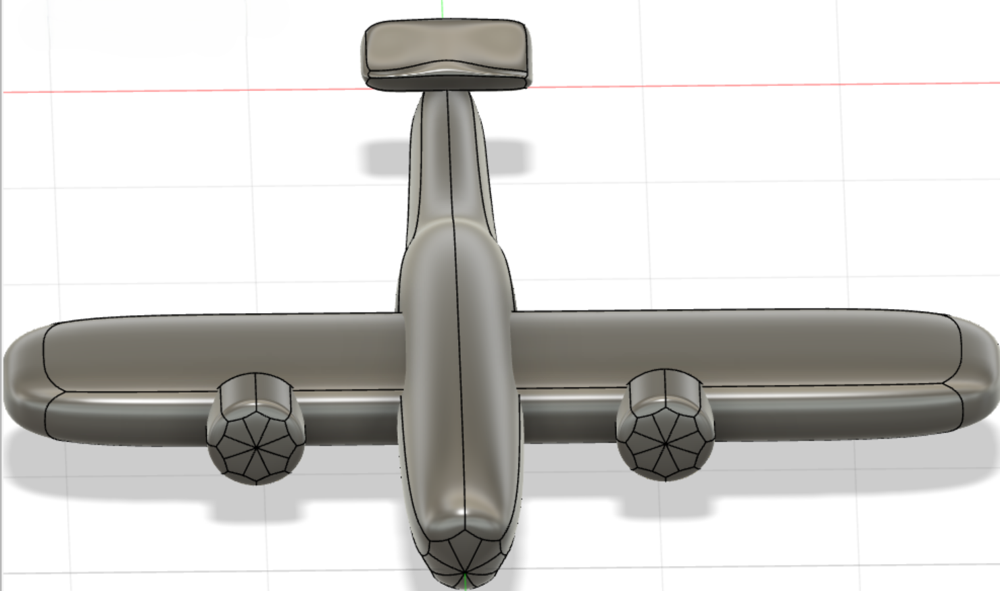
Plane
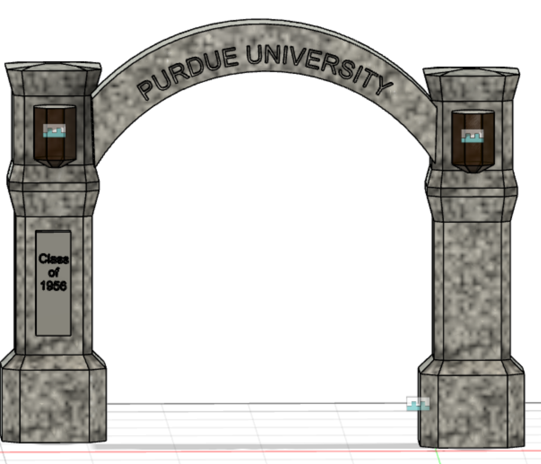
Purdue Arch
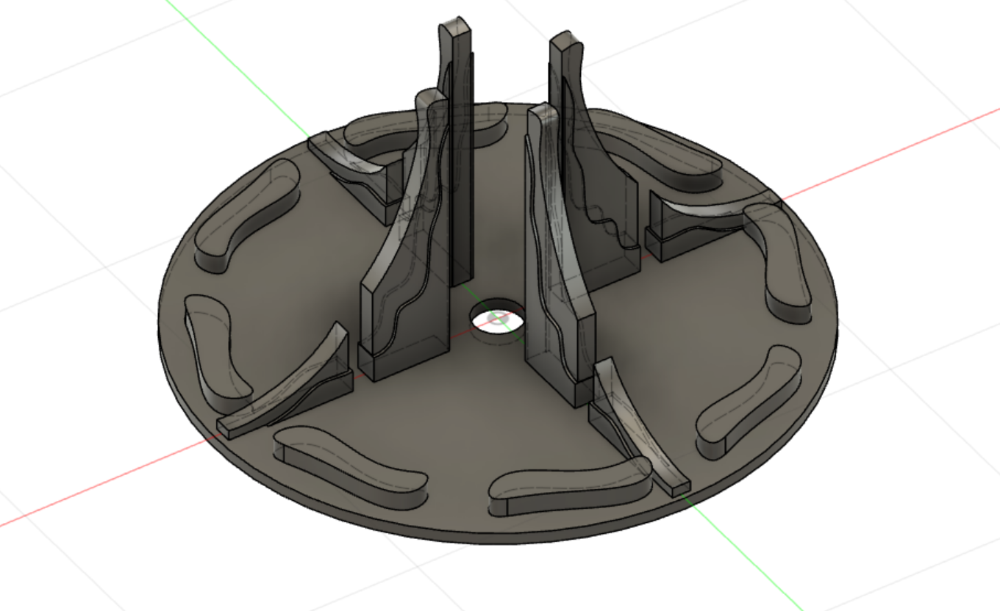
Purdue Engineering Fountain
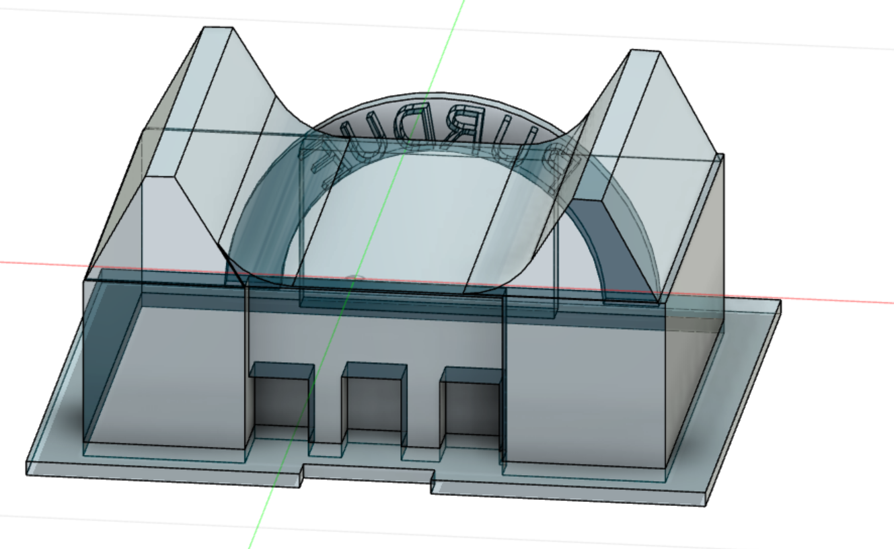
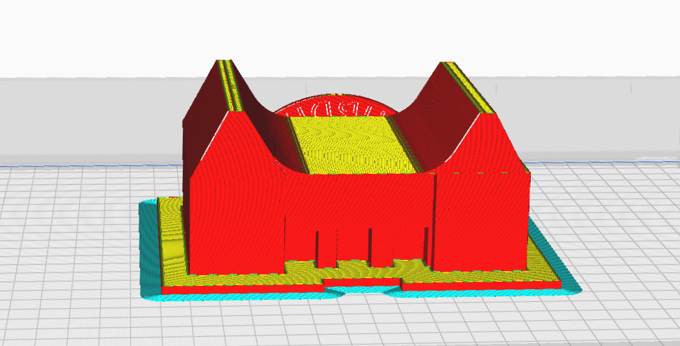
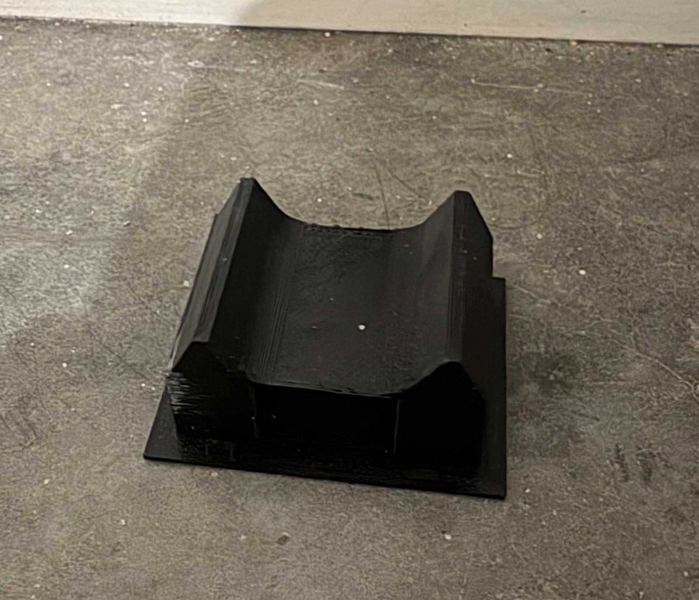
07 — Creative Work

Wave
Innocence

Black and White
Wisdom
For more, visit my art portfolio →

Pumpkin

Ghost

Bowl